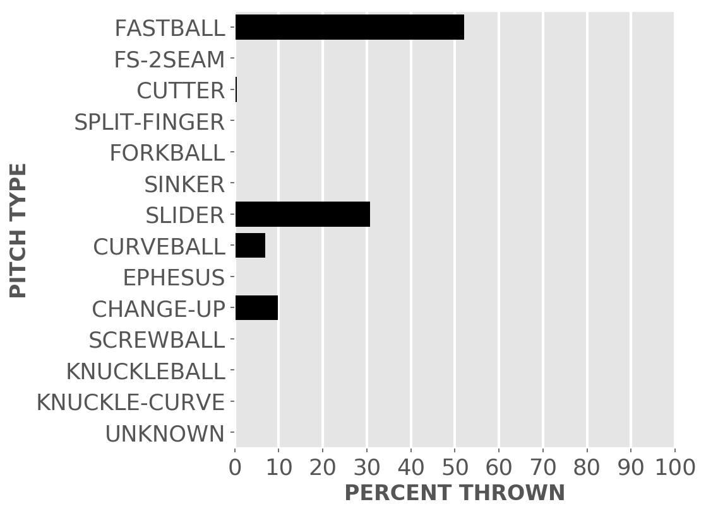

Chicago baseball
White Sox
A little-more-than-casual but not-very-wonky statistical look at the current season
Plenty of seats available to watch the kids learn how to play in the big league.
Updated Saturday, June 19, at 8:00 a.m. Pybaseball gathers these from Baseball-reference.com.
Games
JUMP TO TOP | BATTERS | PITCHERS
On Friday, Jun 18, the Sox lost after a walk off in a day game at the Astros, 1 to 2, in 9 innings. The winning pitcher was Pressly, losing pitcher was Crochet. Save: None.
Next scheduled game: Saturday, Jun 19, an away game at the Astros.
Summary results by team
| Team | Wins | Loses | Avg. Sox runs | Avg. runs against |
|---|---|---|---|---|
| Angels | 1 | 3 | 5.5 | 6.0 |
| Astros | 0 | 2 | 1.5 | 6.0 |
| Blue Jays | 2 | 1 | 4.33 | 3.0 |
| Cardinals | 2 | 1 | 4.33 | 2.67 |
| Indians | 5 | 6 | 4.18 | 3.82 |
| Mariners | 2 | 1 | 6.67 | 4.0 |
| Orioles | 4 | 0 | 4.5 | 1.75 |
| Rangers | 3 | 0 | 6.33 | 4.0 |
| Rays | 2 | 1 | 4.33 | 4.0 |
| Red Sox | 2 | 2 | 4.0 | 5.25 |
| Reds | 1 | 1 | 4.5 | 0.5 |
| Royals | 6 | 3 | 4.44 | 2.56 |
| Tigers | 8 | 2 | 5.9 | 2.6 |
| Twins | 5 | 1 | 8.0 | 3.83 |
| Yankees | 0 | 3 | 1.67 | 4.67 |
Batters
JUMP TO TOP | GAMES | PITCHERS
Click the link under a player's name to get up-to-speed on a player at bat.
Jose Abreu #79, 1B
| Status (A = active) | A |
| Bats/Throws | R/R |
| Plate appearances | 275 |
| At bats | 241 |
| Hits | 61 |
| Home runs | 12 |
| Batting Avg. | 0.253 |

| Runs | 32 |
| RBI | 53 |
| On-base percent | 0.327 |
| Weighted OBP | 0.339 |
| Slugging % | 0.461 |
| Stolen bases | 1 |
| Caught stealing | 0 |
Other measures
| Weighted runs above avg. (wRAA) | 6.3 |
| Runs Above Replacement (RAR) | 12.4 |
| Fielding RAR | 3.2 |
| Wins above replacement (WAR) | 1.3 |
Tim Anderson #7, SS
| Status (A = active) | A |
| Bats/Throws | R/R |
| Plate appearances | 247 |
| At bats | 232 |
| Hits | 71 |
| Home runs | 6 |
| Batting Avg. | 0.306 |

| Runs | 40 |
| RBI | 25 |
| On-base percent | 0.344 |
| Weighted OBP | 0.338 |
| Slugging % | 0.435 |
| Stolen bases | 13 |
| Caught stealing | 5 |
Other measures
| Weighted runs above avg. (wRAA) | 5.4 |
| Runs Above Replacement (RAR) | 18.9 |
| Fielding RAR | 0.5 |
| Wins above replacement (WAR) | 1.9 |
Dylan Cease #84, P
| Status (A = active) | A |
| Bats/Throws | R/R |
| Plate appearances | 3 |
| At bats | 3 |
| Hits | 3 |
| Home runs | 0 |
| Batting Avg. | 1.0 |
| Runs | 1 |
| RBI | 0 |
| On-base percent | 1.0 |
| Weighted OBP | 1.006 |
| Slugging % | 1.333 |
| Stolen bases | 0 |
| Caught stealing | 0 |
Other measures
| Weighted runs above avg. (wRAA) | 1.7 |
| Runs Above Replacement (RAR) | 2.1 |
| Fielding RAR | |
| Wins above replacement (WAR) | 0.2 |
Zack Collins #21, C
| Status (A = active) | A |
| Bats/Throws | L/R |
| Plate appearances | 108 |
| At bats | 94 |
| Hits | 21 |
| Home runs | 2 |
| Batting Avg. | 0.223 |
| Runs | 12 |
| RBI | 12 |
| On-base percent | 0.318 |
| Weighted OBP | 0.303 |
| Slugging % | 0.362 |
| Stolen bases | 0 |
| Caught stealing | 1 |
Other measures
| Weighted runs above avg. (wRAA) | -0.6 |
| Runs Above Replacement (RAR) | 0.0 |
| Fielding RAR | -4.8 |
| Wins above replacement (WAR) | 0.0 |
Adam Eaton #12, RF
| Status (A = active) | D10 |
| Bats/Throws | L/L |
| Plate appearances | 203 |
| At bats | 174 |
| Hits | 34 |
| Home runs | 5 |
| Batting Avg. | 0.195 |

| Runs | 30 |
| RBI | 27 |
| On-base percent | 0.296 |
| Weighted OBP | 0.288 |
| Slugging % | 0.345 |
| Stolen bases | 2 |
| Caught stealing | 0 |
Other measures
| Weighted runs above avg. (wRAA) | -3.7 |
| Runs Above Replacement (RAR) | 4.4 |
| Fielding RAR | 2.8 |
| Wins above replacement (WAR) | 0.4 |
Adam Engel #15, CF
| Status (A = active) | A |
| Bats/Throws | R/R |
| Plate appearances | 28 |
| At bats | 25 |
| Hits | 6 |
| Home runs | 3 |
| Batting Avg. | 0.24 |

| Runs | 4 |
| RBI | 4 |
| On-base percent | 0.321 |
| Weighted OBP | 0.39 |
| Slugging % | 0.6 |
| Stolen bases | 1 |
| Caught stealing | 0 |
Other measures
| Weighted runs above avg. (wRAA) | 1.8 |
| Runs Above Replacement (RAR) | 3.0 |
| Fielding RAR | |
| Wins above replacement (WAR) | 0.3 |
Leury Garcia #28, CF
| Status (A = active) | A |
| Bats/Throws | S/R |
| Plate appearances | 204 |
| At bats | 182 |
| Hits | 46 |
| Home runs | 0 |
| Batting Avg. | 0.253 |

| Runs | 28 |
| RBI | 24 |
| On-base percent | 0.312 |
| Weighted OBP | 0.282 |
| Slugging % | 0.319 |
| Stolen bases | 2 |
| Caught stealing | 1 |
Other measures
| Weighted runs above avg. (wRAA) | -4.8 |
| Runs Above Replacement (RAR) | 1.9 |
| Fielding RAR | -1.9 |
| Wins above replacement (WAR) | 0.2 |
Brian Goodwin #18, CF
| Status (A = active) | A |
| Bats/Throws | L/R |
| Plate appearances | 27 |
| At bats | 23 |
| Hits | 6 |
| Home runs | 1 |
| Batting Avg. | 0.261 |

| Runs | 6 |
| RBI | 6 |
| On-base percent | 0.346 |
| Weighted OBP | 0.371 |
| Slugging % | 0.522 |
| Stolen bases | 0 |
| Caught stealing | 0 |
Other measures
| Weighted runs above avg. (wRAA) | 1.3 |
| Runs Above Replacement (RAR) | 2.1 |
| Fielding RAR | |
| Wins above replacement (WAR) | 0.2 |
Yasmani Grandal #24, C
| Status (A = active) | A |
| Bats/Throws | S/R |
| Plate appearances | 202 |
| At bats | 144 |
| Hits | 22 |
| Home runs | 10 |
| Batting Avg. | 0.153 |

| Runs | 32 |
| RBI | 24 |
| On-base percent | 0.383 |
| Weighted OBP | 0.347 |
| Slugging % | 0.375 |
| Stolen bases | 0 |
| Caught stealing | 0 |
Other measures
| Weighted runs above avg. (wRAA) | 6.0 |
| Runs Above Replacement (RAR) | 14.5 |
| Fielding RAR | 0.0 |
| Wins above replacement (WAR) | 1.5 |
Billy Hamilton #0, CF
| Status (A = active) | D10 |
| Bats/Throws | S/R |
| Plate appearances | 75 |
| At bats | 69 |
| Hits | 15 |
| Home runs | 2 |
| Batting Avg. | 0.217 |

| Runs | 13 |
| RBI | 10 |
| On-base percent | 0.247 |
| Weighted OBP | 0.276 |
| Slugging % | 0.406 |
| Stolen bases | 5 |
| Caught stealing | 0 |
Other measures
| Weighted runs above avg. (wRAA) | -2.1 |
| Runs Above Replacement (RAR) | 3.7 |
| Fielding RAR | 2.2 |
| Wins above replacement (WAR) | 0.4 |
Dallas Keuchel #60, P
| Status (A = active) | A |
| Bats/Throws | L/L |
| Plate appearances | 2 |
| At bats | 2 |
| Hits | 0 |
| Home runs | 0 |
| Batting Avg. | 0.0 |

| Runs | 0 |
| RBI | 0 |
| On-base percent | 0.0 |
| Weighted OBP | 0.0 |
| Slugging % | 0.0 |
| Stolen bases | 0 |
| Caught stealing | 0 |
Other measures
| Weighted runs above avg. (wRAA) | -0.5 |
| Runs Above Replacement (RAR) | -0.2 |
| Fielding RAR | |
| Wins above replacement (WAR) | 0.0 |
Jake Lamb #23, LF
| Status (A = active) | A |
| Bats/Throws | L/R |
| Plate appearances | 87 |
| At bats | 74 |
| Hits | 17 |
| Home runs | 4 |
| Batting Avg. | 0.23 |

| Runs | 14 |
| RBI | 8 |
| On-base percent | 0.345 |
| Weighted OBP | 0.338 |
| Slugging % | 0.419 |
| Stolen bases | 0 |
| Caught stealing | 0 |
Other measures
| Weighted runs above avg. (wRAA) | 1.9 |
| Runs Above Replacement (RAR) | 3.9 |
| Fielding RAR | -0.4 |
| Wins above replacement (WAR) | 0.4 |
Danny Mendick #20, SS
| Status (A = active) | A |
| Bats/Throws | R/R |
| Plate appearances | 97 |
| At bats | 83 |
| Hits | 18 |
| Home runs | 2 |
| Batting Avg. | 0.217 |

| Runs | 9 |
| RBI | 13 |
| On-base percent | 0.323 |
| Weighted OBP | 0.295 |
| Slugging % | 0.325 |
| Stolen bases | 0 |
| Caught stealing | 1 |
Other measures
| Weighted runs above avg. (wRAA) | -1.2 |
| Runs Above Replacement (RAR) | 3.4 |
| Fielding RAR | 1.7 |
| Wins above replacement (WAR) | 0.3 |
Yermin Mercedes #73, 1B
| Status (A = active) | A |
| Bats/Throws | R/R |
| Plate appearances | 242 |
| At bats | 222 |
| Hits | 61 |
| Home runs | 7 |
| Batting Avg. | 0.275 |

| Runs | 22 |
| RBI | 34 |
| On-base percent | 0.331 |
| Weighted OBP | 0.324 |
| Slugging % | 0.414 |
| Stolen bases | 0 |
| Caught stealing | 1 |
Other measures
| Weighted runs above avg. (wRAA) | 2.6 |
| Runs Above Replacement (RAR) | 1.9 |
| Fielding RAR | -0.8 |
| Wins above replacement (WAR) | 0.2 |
Yoan Moncada #10, 3B
| Status (A = active) | A |
| Bats/Throws | S/R |
| Plate appearances | 274 |
| At bats | 225 |
| Hits | 62 |
| Home runs | 5 |
| Batting Avg. | 0.276 |

| Runs | 31 |
| RBI | 32 |
| On-base percent | 0.398 |
| Weighted OBP | 0.358 |
| Slugging % | 0.4 |
| Stolen bases | 1 |
| Caught stealing | 1 |
Other measures
| Weighted runs above avg. (wRAA) | 10.4 |
| Runs Above Replacement (RAR) | 24.5 |
| Fielding RAR | 4.1 |
| Wins above replacement (WAR) | 2.5 |
Jose Ruiz #66, P
| Status (A = active) | A |
| Bats/Throws | R/R |
| Plate appearances | 1 |
| At bats | 1 |
| Hits | 0 |
| Home runs | 0 |
| Batting Avg. | 0.0 |

| Runs | 0 |
| RBI | 0 |
| On-base percent | 0.0 |
| Weighted OBP | 0.0 |
| Slugging % | 0.0 |
| Stolen bases | 0 |
| Caught stealing | 0 |
Other measures
| Weighted runs above avg. (wRAA) | -0.3 |
| Runs Above Replacement (RAR) | -0.1 |
| Fielding RAR | |
| Wins above replacement (WAR) | 0.0 |
Andrew Vaughn #25, LF
| Status (A = active) | A |
| Bats/Throws | R/R |
| Plate appearances | 203 |
| At bats | 179 |
| Hits | 41 |
| Home runs | 5 |
| Batting Avg. | 0.229 |

| Runs | 27 |
| RBI | 16 |
| On-base percent | 0.305 |
| Weighted OBP | 0.305 |
| Slugging % | 0.391 |
| Stolen bases | 0 |
| Caught stealing | 0 |
Other measures
| Weighted runs above avg. (wRAA) | -1.0 |
| Runs Above Replacement (RAR) | 3.0 |
| Fielding RAR | 0.2 |
| Wins above replacement (WAR) | 0.3 |
Pitchers
Click the link under a player's name to get acquainted with who's on the mound. Click here for a description of these stats and more.
Aaron Bummer #39, P
| Status (A = active) | A |
| Bats/Throws | L/L |
| Wins | 0 |
| Losses | 4 |
| ERA | 3.86 |
| Caught stealing | 0 |
| Complete games | 0 |
| Shutouts | 0 |
| Saves | 2 |
| Blown saves | 5 |
Pitch types

Fastball = Four Seam and Unclassified Fastballs; FS-2seam = Two Seam Fastballs; Ephesuses are a really slow ball
| Average innings pitched | 0.9 |
| Strikeouts per 9 innings | 12.97 |
| Walks per 9 innings | 5.26 |
| Walks, hits per inning (WHIP) | 1.48 |
| Percent left on base | 63.5 |
| Percent first pitch strike | 54.3 |
Other measures
| Avg. run support | 7.0 |
| Opponents batting average | 0.23 |
| Batting avg. on balls in play | 0.344 |
| Fielding independent pitching | 3.17 |
| Win probability added (WPA) | -1.14 |
| Runs above replacement | 4.3 |
| WAR | 0.4 |
Zack Burdi #62, P
| Status (A = active) | A |
| Bats/Throws | R/R |
| Wins | 0 |
| Losses | 0 |
| ERA | 1.93 |
| Caught stealing | 0 |
| Complete games | 0 |
| Shutouts | 0 |
| Saves | 0 |
| Blown saves | 0 |
Pitch types

Fastball = Four Seam and Unclassified Fastballs; FS-2seam = Two Seam Fastballs; Ephesuses are a really slow ball
| Average innings pitched | 2.1 |
| Strikeouts per 9 innings | 5.79 |
| Walks per 9 innings | 5.79 |
| Walks, hits per inning (WHIP) | 1.5 |
| Percent left on base | 89.3 |
| Percent first pitch strike | 52.4 |
Other measures
| Avg. run support | 4.0 |
| Opponents batting average | 0.222 |
| Batting avg. on balls in play | 0.214 |
| Fielding independent pitching | 6.6 |
| Win probability added (WPA) | -0.03 |
| Runs above replacement | -0.5 |
| WAR | 0.0 |
Ryan Burr #61, P
| Status (A = active) | A |
| Bats/Throws | R/R |
| Wins | 1 |
| Losses | 0 |
| ERA | 0.0 |
| Caught stealing | 0 |
| Complete games | 0 |
| Shutouts | 0 |
| Saves | 0 |
| Blown saves | 0 |
Pitch types

Fastball = Four Seam and Unclassified Fastballs; FS-2seam = Two Seam Fastballs; Ephesuses are a really slow ball
| Average innings pitched | 1.3 |
| Strikeouts per 9 innings | 6.75 |
| Walks per 9 innings | 3.38 |
| Walks, hits per inning (WHIP) | 0.38 |
| Percent left on base | 100.0 |
| Percent first pitch strike | 58.8 |
Other measures
| Avg. run support | 3.0 |
| Opponents batting average | 0.0 |
| Batting avg. on balls in play | 0.0 |
| Fielding independent pitching | 2.79 |
| Win probability added (WPA) | 0.37 |
| Runs above replacement | 0.8 |
| WAR | 0.1 |
Dylan Cease #84, P
| Status (A = active) | A |
| Bats/Throws | R/R |
| Wins | 5 |
| Losses | 3 |
| ERA | 3.99 |
| Caught stealing | 14 |
| Complete games | 1 |
| Shutouts | 1 |
| Saves | 0 |
| Blown saves | 0 |
Pitch types

Fastball = Four Seam and Unclassified Fastballs; FS-2seam = Two Seam Fastballs; Ephesuses are a really slow ball
| Average innings pitched | 5.0 |
| Strikeouts per 9 innings | 11.44 |
| Walks per 9 innings | 3.99 |
| Walks, hits per inning (WHIP) | 1.3 |
| Percent left on base | 73.1 |
| Percent first pitch strike | 54.9 |
Other measures
| Avg. run support | 56.0 |
| Opponents batting average | 0.224 |
| Batting avg. on balls in play | 0.308 |
| Fielding independent pitching | 3.47 |
| Win probability added (WPA) | 0.23 |
| Runs above replacement | 16.0 |
| WAR | 1.7 |
Garrett Crochet #45, P
| Status (A = active) | A |
| Bats/Throws | L/L |
| Wins | 2 |
| Losses | 3 |
| ERA | 1.19 |
| Caught stealing | 0 |
| Complete games | 0 |
| Shutouts | 0 |
| Saves | 0 |
| Blown saves | 0 |
Pitch types

Fastball = Four Seam and Unclassified Fastballs; FS-2seam = Two Seam Fastballs; Ephesuses are a really slow ball
| Average innings pitched | 1.1 |
| Strikeouts per 9 innings | 10.72 |
| Walks per 9 innings | 4.76 |
| Walks, hits per inning (WHIP) | 1.28 |
| Percent left on base | 83.9 |
| Percent first pitch strike | 59.6 |
Other measures
| Avg. run support | 12.0 |
| Opponents batting average | 0.198 |
| Batting avg. on balls in play | 0.276 |
| Fielding independent pitching | 3.08 |
| Win probability added (WPA) | 0.11 |
| Runs above replacement | 4.8 |
| WAR | 0.5 |
Matt Foster #63, P
| Status (A = active) | A |
| Bats/Throws | R/R |
| Wins | 2 |
| Losses | 1 |
| ERA | 6.41 |
| Caught stealing | 0 |
| Complete games | 0 |
| Shutouts | 0 |
| Saves | 0 |
| Blown saves | 1 |
Pitch types
Fastball = Four Seam and Unclassified Fastballs; FS-2seam = Two Seam Fastballs; Ephesuses are a really slow ball
| Average innings pitched | 1.0 |
| Strikeouts per 9 innings | 11.9 |
| Walks per 9 innings | 3.2 |
| Walks, hits per inning (WHIP) | 1.47 |
| Percent left on base | 66.7 |
| Percent first pitch strike | 60.0 |
Other measures
| Avg. run support | 4.0 |
| Opponents batting average | 0.272 |
| Batting avg. on balls in play | 0.34 |
| Fielding independent pitching | 5.2 |
| Win probability added (WPA) | -0.75 |
| Runs above replacement | -1.2 |
| WAR | -0.1 |
Lucas Giolito #27, P
| Status (A = active) | A |
| Bats/Throws | R/R |
| Wins | 5 |
| Losses | 5 |
| ERA | 3.86 |
| Caught stealing | 14 |
| Complete games | 0 |
| Shutouts | 0 |
| Saves | 0 |
| Blown saves | 0 |
Pitch types

Fastball = Four Seam and Unclassified Fastballs; FS-2seam = Two Seam Fastballs; Ephesuses are a really slow ball
| Average innings pitched | 5.8 |
| Strikeouts per 9 innings | 11.35 |
| Walks per 9 innings | 2.98 |
| Walks, hits per inning (WHIP) | 1.1 |
| Percent left on base | 77.3 |
| Percent first pitch strike | 63.1 |
Other measures
| Avg. run support | 46.0 |
| Opponents batting average | 0.207 |
| Batting avg. on balls in play | 0.253 |
| Fielding independent pitching | 4.22 |
| Win probability added (WPA) | 0.57 |
| Runs above replacement | 12.8 |
| WAR | 1.3 |
Liam Hendriks #31, P
| Status (A = active) | A |
| Bats/Throws | R/R |
| Wins | 3 |
| Losses | 1 |
| ERA | 2.15 |
| Caught stealing | 0 |
| Complete games | 0 |
| Shutouts | 0 |
| Saves | 18 |
| Blown saves | 3 |
Pitch types

Fastball = Four Seam and Unclassified Fastballs; FS-2seam = Two Seam Fastballs; Ephesuses are a really slow ball
| Average innings pitched | 0.9 |
| Strikeouts per 9 innings | 14.11 |
| Walks per 9 innings | 0.92 |
| Walks, hits per inning (WHIP) | 0.82 |
| Percent left on base | 88.2 |
| Percent first pitch strike | 68.7 |
Other measures
| Avg. run support | 10.0 |
| Opponents batting average | 0.188 |
| Batting avg. on balls in play | 0.262 |
| Fielding independent pitching | 2.55 |
| Win probability added (WPA) | 0.63 |
| Runs above replacement | 9.7 |
| WAR | 1.0 |
Codi Heuer #65, P
| Status (A = active) | A |
| Bats/Throws | R/R |
| Wins | 4 |
| Losses | 1 |
| ERA | 5.86 |
| Caught stealing | 0 |
| Complete games | 0 |
| Shutouts | 0 |
| Saves | 0 |
| Blown saves | 0 |
Pitch types

Fastball = Four Seam and Unclassified Fastballs; FS-2seam = Two Seam Fastballs; Ephesuses are a really slow ball
| Average innings pitched | 1.0 |
| Strikeouts per 9 innings | 9.43 |
| Walks per 9 innings | 1.3 |
| Walks, hits per inning (WHIP) | 1.41 |
| Percent left on base | 64.0 |
| Percent first pitch strike | 59.8 |
Other measures
| Avg. run support | 16.0 |
| Opponents batting average | 0.313 |
| Batting avg. on balls in play | 0.392 |
| Fielding independent pitching | 3.49 |
| Win probability added (WPA) | 1.06 |
| Runs above replacement | 3.8 |
| WAR | 0.4 |
Dallas Keuchel #60, P
| Status (A = active) | A |
| Bats/Throws | L/L |
| Wins | 6 |
| Losses | 1 |
| ERA | 3.78 |
| Caught stealing | 14 |
| Complete games | 0 |
| Shutouts | 0 |
| Saves | 0 |
| Blown saves | 0 |
Pitch types

Fastball = Four Seam and Unclassified Fastballs; FS-2seam = Two Seam Fastballs; Ephesuses are a really slow ball
| Average innings pitched | 5.6 |
| Strikeouts per 9 innings | 5.26 |
| Walks per 9 innings | 2.52 |
| Walks, hits per inning (WHIP) | 1.25 |
| Percent left on base | 70.9 |
| Percent first pitch strike | 58.0 |
Other measures
| Avg. run support | 66.0 |
| Opponents batting average | 0.252 |
| Batting avg. on balls in play | 0.271 |
| Fielding independent pitching | 4.4 |
| Win probability added (WPA) | 0.73 |
| Runs above replacement | 7.9 |
| WAR | 0.8 |
Michael Kopech #34, P
| Status (A = active) | D10 |
| Bats/Throws | R/R |
| Wins | 2 |
| Losses | 0 |
| ERA | 1.72 |
| Caught stealing | 3 |
| Complete games | 0 |
| Shutouts | 0 |
| Saves | 0 |
| Blown saves | 0 |
Pitch types

Fastball = Four Seam and Unclassified Fastballs; FS-2seam = Two Seam Fastballs; Ephesuses are a really slow ball
| Average innings pitched | 2.2 |
| Strikeouts per 9 innings | 12.93 |
| Walks per 9 innings | 3.16 |
| Walks, hits per inning (WHIP) | 0.99 |
| Percent left on base | 93.3 |
| Percent first pitch strike | 61.6 |
Other measures
| Avg. run support | 16.0 |
| Opponents batting average | 0.175 |
| Batting avg. on balls in play | 0.258 |
| Fielding independent pitching | 2.59 |
| Win probability added (WPA) | 0.58 |
| Runs above replacement | 9.0 |
| WAR | 1.0 |
Lance Lynn #33, P
| Status (A = active) | A |
| Bats/Throws | S/R |
| Wins | 7 |
| Losses | 2 |
| ERA | 1.51 |
| Caught stealing | 12 |
| Complete games | 1 |
| Shutouts | 1 |
| Saves | 0 |
| Blown saves | 0 |
Pitch types

Fastball = Four Seam and Unclassified Fastballs; FS-2seam = Two Seam Fastballs; Ephesuses are a really slow ball
| Average innings pitched | 5.9 |
| Strikeouts per 9 innings | 10.05 |
| Walks per 9 innings | 2.51 |
| Walks, hits per inning (WHIP) | 0.93 |
| Percent left on base | 91.5 |
| Percent first pitch strike | 57.5 |
Other measures
| Avg. run support | 44.0 |
| Opponents batting average | 0.178 |
| Batting avg. on balls in play | 0.222 |
| Fielding independent pitching | 3.27 |
| Win probability added (WPA) | 1.83 |
| Runs above replacement | 17.3 |
| WAR | 1.9 |
Evan Marshall #43, P
| Status (A = active) | A |
| Bats/Throws | R/R |
| Wins | 0 |
| Losses | 2 |
| ERA | 5.19 |
| Caught stealing | 0 |
| Complete games | 0 |
| Shutouts | 0 |
| Saves | 0 |
| Blown saves | 4 |
Pitch types

Fastball = Four Seam and Unclassified Fastballs; FS-2seam = Two Seam Fastballs; Ephesuses are a really slow ball
| Average innings pitched | 1.0 |
| Strikeouts per 9 innings | 8.65 |
| Walks per 9 innings | 2.77 |
| Walks, hits per inning (WHIP) | 1.31 |
| Percent left on base | 70.4 |
| Percent first pitch strike | 54.7 |
Other measures
| Avg. run support | 14.0 |
| Opponents batting average | 0.265 |
| Batting avg. on balls in play | 0.309 |
| Fielding independent pitching | 4.67 |
| Win probability added (WPA) | -0.42 |
| Runs above replacement | -0.3 |
| WAR | 0.0 |
Danny Mendick #20, SS
| Status (A = active) | A |
| Bats/Throws | R/R |
| Wins | 0 |
| Losses | 0 |
| ERA | 0.0 |
| Caught stealing | 0 |
| Complete games | 0 |
| Shutouts | 0 |
| Saves | 0 |
| Blown saves | 0 |
Pitch types

Fastball = Four Seam and Unclassified Fastballs; FS-2seam = Two Seam Fastballs; Ephesuses are a really slow ball
| Average innings pitched | 1.0 |
| Strikeouts per 9 innings | 9.0 |
| Walks per 9 innings | 0.0 |
| Walks, hits per inning (WHIP) | 1.0 |
| Percent left on base | 100.0 |
| Percent first pitch strike | 60.0 |
Other measures
| Avg. run support | 0.0 |
| Opponents batting average | 0.25 |
| Batting avg. on balls in play | 0.333 |
| Fielding independent pitching | 4.17 |
| Win probability added (WPA) | 0.0 |
| Runs above replacement | 0.0 |
| WAR | 0.0 |
Yermin Mercedes #73, 1B
| Status (A = active) | A |
| Bats/Throws | R/R |
| Wins | 0 |
| Losses | 0 |
| ERA | 9.0 |
| Caught stealing | 0 |
| Complete games | 0 |
| Shutouts | 0 |
| Saves | 0 |
| Blown saves | 0 |
Pitch types

Fastball = Four Seam and Unclassified Fastballs; FS-2seam = Two Seam Fastballs; Ephesuses are a really slow ball
| Average innings pitched | 1.0 |
| Strikeouts per 9 innings | 0.0 |
| Walks per 9 innings | 18.0 |
| Walks, hits per inning (WHIP) | 5.0 |
| Percent left on base | 80.0 |
| Percent first pitch strike | 28.6 |
Other measures
| Avg. run support | 0.0 |
| Opponents batting average | 0.6 |
| Batting avg. on balls in play | 0.6 |
| Fielding independent pitching | 9.17 |
| Win probability added (WPA) | 0.0 |
| Runs above replacement | -0.3 |
| WAR | 0.0 |
Carlos Rodon #55, P
| Status (A = active) | A |
| Bats/Throws | L/L |
| Wins | 6 |
| Losses | 2 |
| ERA | 1.83 |
| Caught stealing | 12 |
| Complete games | 1 |
| Shutouts | 1 |
| Saves | 0 |
| Blown saves | 0 |
Pitch types

Fastball = Four Seam and Unclassified Fastballs; FS-2seam = Two Seam Fastballs; Ephesuses are a really slow ball
| Average innings pitched | 6.1 |
| Strikeouts per 9 innings | 12.83 |
| Walks per 9 innings | 2.44 |
| Walks, hits per inning (WHIP) | 0.84 |
| Percent left on base | 87.0 |
| Percent first pitch strike | 57.5 |
Other measures
| Avg. run support | 38.0 |
| Opponents batting average | 0.16 |
| Batting avg. on balls in play | 0.238 |
| Fielding independent pitching | 2.39 |
| Win probability added (WPA) | 1.69 |
| Runs above replacement | 24.7 |
| WAR | 2.8 |
Jose Ruiz #66, P
| Status (A = active) | A |
| Bats/Throws | R/R |
| Wins | 0 |
| Losses | 1 |
| ERA | 2.67 |
| Caught stealing | 0 |
| Complete games | 0 |
| Shutouts | 0 |
| Saves | 0 |
| Blown saves | 0 |
Pitch types

Fastball = Four Seam and Unclassified Fastballs; FS-2seam = Two Seam Fastballs; Ephesuses are a really slow ball
| Average innings pitched | 1.1 |
| Strikeouts per 9 innings | 9.33 |
| Walks per 9 innings | 3.0 |
| Walks, hits per inning (WHIP) | 1.04 |
| Percent left on base | 71.4 |
| Percent first pitch strike | 61.8 |
Other measures
| Avg. run support | 7.0 |
| Opponents batting average | 0.188 |
| Batting avg. on balls in play | 0.239 |
| Fielding independent pitching | 3.06 |
| Win probability added (WPA) | -0.37 |
| Runs above replacement | 3.2 |
| WAR | 0.3 |
JUMP TO TOP